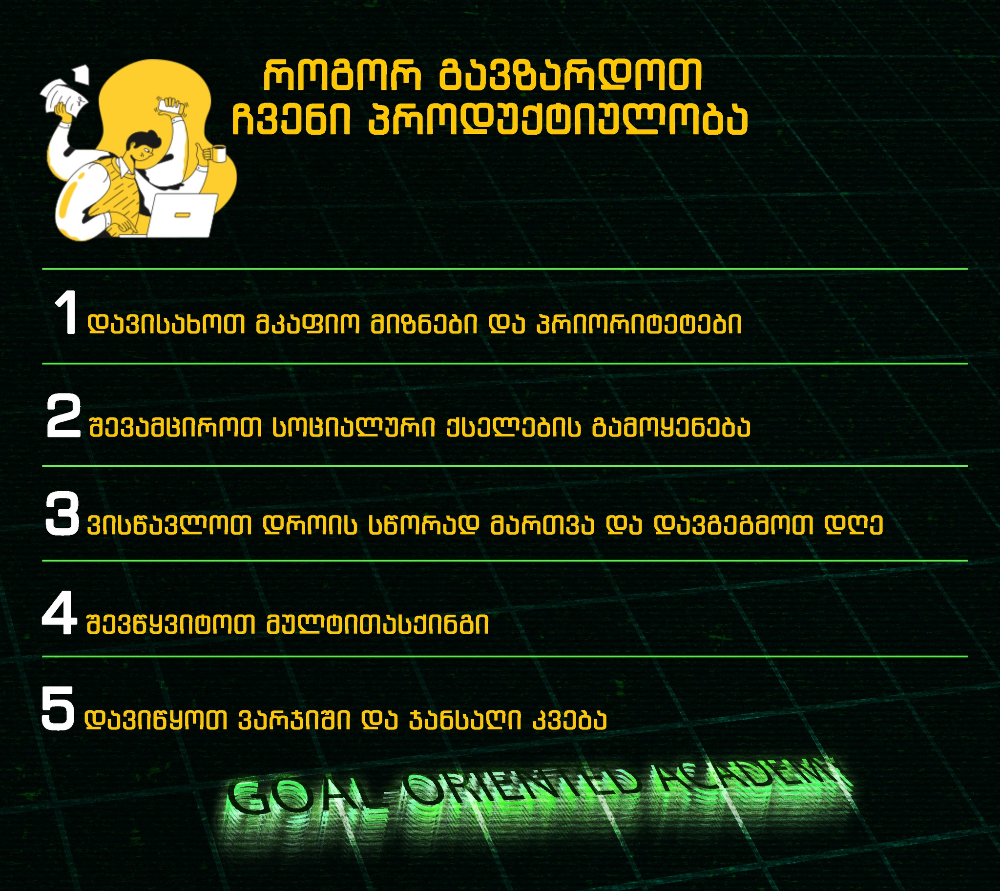

Goal-Oriented Academy • GOA
ცხოვრება უკიდეგანო მოგზაურობაა, რომელშიც ჩვენ ხშირად აღმოვჩნდებით გზაჯვარედინზე. არჩევანის წინაშე, რომელიც აყალიბებს ჩვენს ბედს. ზოგიერთი გადაწყვეტილება ისეთივე მარტივია, როგორც ნაზი ნიავი, ზოგი კი ჩვენს სულებს გაურკვევლობის სიმძიმით აღძრავს. მიუხედავად ამისა, არსებობს მარადიული ჭეშმარიტება, რომელიც რჩება ჩვენი არსებობის სიღრმეში: მარტივი გადაწყვეტილებები იწვევს მძიმე ცხოვრებას, მაგრამ მძიმე გადაწყვეტილებებს მივყავართ მარტივ ცხოვრებამდე. ხედავ, ჩემო მეგობარო, უმცირესი წინააღმდეგობის გზა შეიძლება გვთავაზობდეს ხანმოკლე კომფორტს და წარმავალ სიამოვნებებს, მაგრამ იშვიათად მივყავართ ჭეშმარიტ სრულყოფამდე. ის გვაოცებს სიმარტივის ილუზიით, როგორც მირაჟი უდაბნოში. სწორედ სირთულის სფეროში ვპოულობთ ზრდის, გამძლეობისა და ტრიუმფის ნამდვილ არსს: როდესაც ჩვენ ვიღებთ გამოწვევას; როდესაც ვხდებით გამბედავები; როდესაც ვუპირისპირდებით უცნობს; როდესაც ვისახავთ მიუღწეველ *მიზნებს*; ჩვენ ვეშვებით თვითაღდგენისა და ტრანსფორმაციის პროცესში. მძიმე გადაწყვეტილებები, რომლებიც ჩვენს გულებს შიშისგან აკანკალებს, მათში სიდიადის თესლს აღვივებენ. ისინი გამოცდიან ჩვენს უნარს, დაგვაძლევინებენ ჩვენს ლიმიტებს და გვაიძულებენ დავძლიოთ მედიდურობის ბორკილები. როდესაც ჩვენ ვბედავთ ვიაროთ გაუკაფავ გზაზე, ჩვენ ვაღვიძებთ მიძინებულ ძალებს ჩვენში, ვიყენებთ გამძლეობისა და მონდომების რეზერვებს, რომელთა არსებობის შესახებაც არაფერი ვიცოდით. ჩვენ ვხსნით ჩვენი საკუთარი პოტენციალის საიდუმლოებებს და ვაღწევთ წარმოუდგენელ სიმაღლეებს. ამის საპირწონედ, მარტივი გადაწყვეტილებები შეიძლება თავიდან მიმზიდველად მოგეჩვენოთ, რაც გვპირდება გაჭირვებისა და დისკომფორტის გარეშე ცხოვრებას. მაგრამ სამწუხაროდ, ისინი გვაკავშირებენ თვითკმაყოფილების ციკლთან, გვიჭერენ ხაფანგში სტაგნაციაში, რომელსაც არ აქვს ზრდა და პოტენციალი. როგორც წყნარი ტბა, ტალღების გარეშე, ის შეიძლება გარეგნულად მშვიდად ჩანდეს, მაგრამ მის ქვეშ არის მიძინებული სამეფო, სადაც ოცნებები და მისწრაფებები ქრება. ასე რომ, ჩემო მეგობარო, ნუ მოერიდები მძიმე გადაწყვეტილებებს, რომლებიც გიბიძგებს. მოეხვიეთ მათ გაშლილი ხელებით, რადგან ისინი არიან სიდიადეების ინიციატორები. ეს გზა შეიძლება ურთულესი ჩანდეს, მაგრამ საბოლოოდ მიგიყვანს სიუხვით, მიზანდასახულობითა და ნამდვილი თავისუფლებით სავსე ცხოვრებისკენ. აირჩიე გონივრულად, ჩემო მეგობარო, და ნება მიეცი შენს გამბედაობის შუქს, გიბიძგოს მომავლისკენ, სადაც ყოველი გადაწყვეტილება, რაც არ უნდა რთული ჩანდეს, შენი დაუოკებელი სულის გამოძახილია. (c) - Nika Keshelava შემოუერთდი Goal-Oriented Academy • GOA -ს. დაეუფლე თანამედროვე და მოთხოვნად პროფესიებს. become a chad 🗿

პროდუქტიულობით თქვენი ცხოვრების ყველა ასპექტი დაიხვეწება, მათ შორის - ფინანსურიც. ჩვენი გაკვეთილები მოიცავს პროდუქტიულობის და სხვადასხვა საჭირო უნარების გამომუშავების მოდულებსაც, რაც ბავშვებს უზრდის სამომავლო პოტენციალს და უკან იტოვებენ ისეთ მავნე ჩვევებს, როგორებიცაა: თამაშებზე დამოკიდებულება, ტიკტოკის სქროლვა, წიგნების არწაკითხვა და ა.შ გააკეთეთ საუკეთესო არჩევანი. შემოგვიერთდით Goal-Oriented Academy • GOA - ში.
